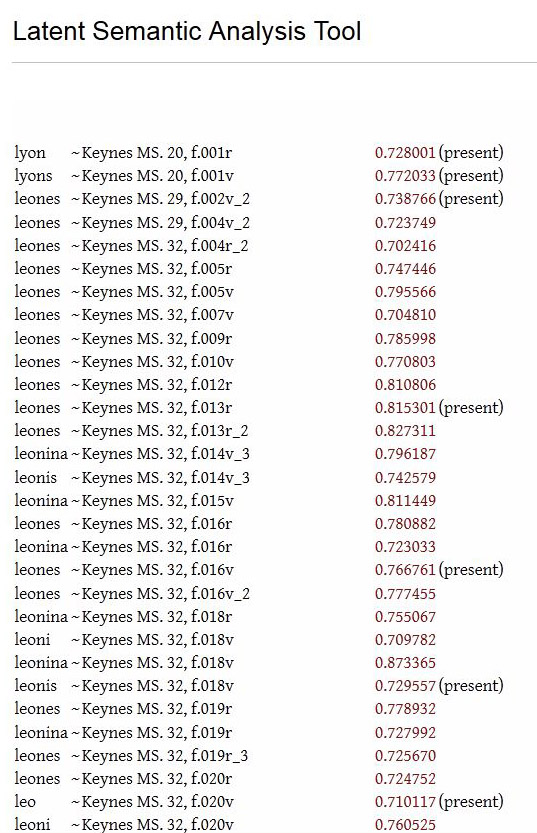

This output format is designed to list term results in catalog order to allow the user to study how the terms are used across the corpus in a systematic way.
This option is only available for Term-Chunk and Chunk-Term searches.
Listings look like this example for the term leo, lion, and lyon, and their inflections. Click the correlation link to view the uses of the terms in the chunk.
